2 Graphical models
\[ \def\then{\mathbin{;}} \def\kernel{\rightsquigarrow} \def\swap{\mathsf{swap}} \def\id{\mathsf{id}} \def\cp{\mathsf{copy}} \def\del{\mathsf{del}} \def\ivmark#1{[\![#1]\!]} \]
In this chapter, we learn how to interpret string diagrams as probability distributions. This lets us manipulate complex models visually, without tedious algebra. By the end, you will be able to read the following diagram as a probability distribution and sample from it by writing a probabilistic program that follows the structure of the diagram.
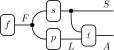
2.1 Kernels
The basic building blocks of our models are kernels.
Definition 2.1 Let \(X\) and \(Y\) be finite sets. A discrete kernel \(f : X \kernel Y\) assigns each \(x \in X\) and \(y \in Y\) a non-negative real number \(f(y \mid x)\). We call \(f\) a probability kernel if it is normalized: \(\sum_{y \in Y} f(y \mid x) = 1\) for every \(x \in X\).
As the notation suggests, we think of a probability kernel \(f : X \kernel Y\) as specifying the conditional distribution \(p(y \mid x)\) of \(Y\) given \(X\). We can also think of \(f\) as a random function: given an input \(x\), it randomly picks an output \(y\) according to the probabilities \(f(y \mid x)\). A key feature is that the output probability depends only on the input \(x\) — once we know \(x\), learning any other variable \(w\) tells us nothing more about \(y\): \[ f(y \mid x) = p(y \mid x) = p(y \mid x, w). \]
Unnormalized kernels come up naturally in many settings, including conditioning. It is possible that \(\sum_{y \in Y} f(y \mid x) = 0\) for some input \(x\) — the kernel assigns zero likelihood to every outcome and acts like a partial function that produces no output.
We represent a kernel \(f : X \kernel Y\) as a box with an input wire \(X\) and an output wire \(Y\):
We now see how to combine kernels into complex models. The two main operations are sequential and parallel composition. We also need a few operations for manipulating wires: crossing, copying, and deleting.
2.1.1 Sequential composition
Given a second kernel \(g : Y \kernel Z\), we can feed the output of \(f\) into \(g\) to get a new kernel \((f \then g) : X \kernel Z\). This is called the sequential composition of \(f\) and \(g\). The symbol \(\then \,\) is pronounced “then”: in the expression \(f \then g\), the input is processed first by \(f\), then by \(g\).
How do we compute the composite kernel \((f \then g)\) from \(f\) and \(g\)? If we interpret \(f\) and \(g\) as conditional distributions, the chain rule and conditional independence give:
\[ \begin{aligned} p(z \mid x) &= \sum_{y \in Y} p(z,y \mid x) = \sum_{y \in Y} p(z \mid y, x) \, p(y \mid x) \\ &= \sum_{y \in Y} p(z \mid y) \, p(y \mid x) = \sum_{y \in Y} g(z \mid y) \, f(y \mid x). \end{aligned} \]
We take this as the definition of the composite kernel.
Definition 2.2 The sequential composition of kernels \(f : X \kernel Y\) and \(g : Y \kernel Z\) is the kernel \((f \then g) : X \kernel Z\) defined by \[ (f \then g)(z \mid x) := \sum_{y \in Y} g(z \mid y) \, f(y \mid x). \]
We parse sequential composites in string diagrams from left to right.
Notation: The Iverson bracket \(\ivmark{\phi}\) converts a logical statement \(\phi\) into a number: \[ \ivmark{\phi} := \begin{cases} 1 & \text{if } \phi \text{ is true,} \\ 0 & \text{otherwise.} \end{cases} \]
Definition 2.3 For every set \(X\), the identity kernel \(\id_X : X \kernel X\) is defined by \[ \id_X(x' \mid x) := \ivmark{x' = x}. \]
The identity kernel passes its input through unchanged: given input \(x\), it outputs \(x\) with probability 1. Composing any kernel \(f : X \kernel Y\) with identities leaves it unchanged: \[ \begin{aligned} (\id_X \then f)(y \mid x) &= \sum_{x' \in X} f(y \mid x') \, \ivmark{x' = x} = f(y \mid x), \\ (f \then \id_Y)(y' \mid x) &= \sum_{y \in Y} \, \ivmark{y' = y} \, f(y \mid x) = f(y' \mid x). \end{aligned} \]
Since composing with the identity has no effect, we can think of a wire labeled \(X\) as the identity kernel \(\id_X\). In particular, stretching or shortening a wire doesn’t change the meaning of the diagram.
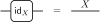
Using only sequential composition, we can already build a famous model:
Example 2.4 Consider a probability kernel \(k : X \kernel X\) whose input and output are the same set \(X\). We think of \(X\) as a state space. Then \(k\) describes a system that randomly hops between states: at each time step \(t\), the system moves from state \(x_t\) to state \(x_{t+1}\) with probability \(k(x_{t+1} \mid x_t)\). This is called a Markov chain and can be represented as the following string diagram:
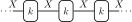
Composing \(k\) with itself gives the two-step transition \(k^2 := (k \then k)\): \[ k^2(x_{t+2} \mid x_t) = \sum_{x_{t+1}} k(x_{t+2} \mid x_{t+1}) \, k(x_{t+1} \mid x_t). \]
This is the Chapman–Kolmogorov equation for Markov chains. From this perspective, a probability kernel \(f : X \kernel Y\) can be seen as a generalization of a Markov chain where the input and output spaces need not coincide.
2.1.2 Parallel composition
Next, we can place two kernels \(f_1 : X_1 \kernel Y_1\) and \(f_2 : X_2 \kernel Y_2\) side by side to get a new kernel \((f_1 \otimes f_2) : X_1 \times X_2 \kernel Y_1 \times Y_2\). This is the parallel composition of \(f_1\) and \(f_2\). It represents the joint behavior of two independent processes.
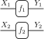
How should we define this? If \(f_1\) and \(f_2\) act independently, we have: \[ p(y_1, y_2 \mid x_1, x_2) = p(y_1 \mid y_2, x_1, x_2) \, p(y_2 \mid x_1, x_2) = p(y_1 \mid x_1) \, p(y_2 \mid x_2) = f_1(y_1 \mid x_1) \, f_2(y_2 \mid x_2). \]
We take this as our definition.
Definition 2.5 Given finite sets \(X_1\) and \(X_2\), we define their product \[ X_1 \otimes X_2 := X_1 \times X_2 = \{(x_1,x_2) \mid x_1 \in X_1 \text{ and } x_2 \in X_2\} \]
to be the Cartesian product of sets. The parallel composition of kernels \(f_1 : X_1 \kernel Y_1\) and \(f_2 : X_2 \kernel Y_2\) is the kernel \((f_1 \otimes f_2) : X_1 \times X_2 \kernel Y_1 \times Y_2\) defined by \[ (f_1 \otimes f_2)(y_1, y_2 \mid x_1, x_2) := f_1(y_1 \mid x_1) \, f_2(y_2 \mid x_2). \]
We parse parallel composites in string diagrams from top to bottom.
2.1.3 Bundling wires
Using products, we can represent kernels with multiple inputs and outputs. For example, we draw a kernel \(f : X_1 \otimes X_2 \kernel Y_1 \otimes Y_2\) as a box with two input wires \(X_1, X_2\) and two output wires \(Y_1, Y_2\):
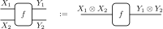
This makes sense because the elements of \(X_1 \otimes X_2\) are pairs \((x_1, x_2)\), so each coordinate occupies its own wire. It is also consistent with drawing identity kernels as wires, since \(\id_{X_1 \otimes X_2} = \id_{X_1} \otimes \id_{X_2}\) (verify this by direct calculation).
We also want to draw boxes without input or output wires. There are three basic types:
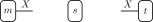
How should we interpret \(m\) as a kernel? Its output set is \(X\), but what is its input set? The idea is to give \(m\) a dummy input that carries no information. We represent this dummy input by a special set \(I := \{\bullet\}\) containing a single element. Then \(m\) is a kernel \(m : I \kernel X\). Since wires labeled by \(I\) carry no information, we can drop and insert them freely. In particular, we draw \(m\) without an input wire:
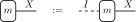
This convention also makes sense mathematically. By definition, \[I \otimes X = \{ (\bullet,x) \mid x \in X \}.\]
This set is essentially the same as \(X\) — its elements are just paired with the dummy element \(\bullet\). We say \(I \otimes X\) and \(X\) are isomorphic (same shape) via the relabeling \((\bullet,x) \leftrightarrow x\), and write \(I \otimes X \cong X\). The same applies on the output side: \(X \otimes I \cong X\).
Here is what these three types represent:
- A kernel \(m : I \kernel X\) assigns each \(x \in X\) a non-negative number \(m(x \mid \bullet)\). We think of \(m\) as a measure on \(X\).
- A kernel \(t : X \kernel I\) assigns each \(x \in X\) a non-negative number \(t(\bullet \mid x)\). We think of \(t\) as a test function on \(X\).
- A kernel \(s : I \kernel I\) is a single non-negative number \(s(\bullet \mid \bullet)\). We think of \(s\) as a scalar.
Composing a measure \(m : I \kernel X\) with a test function \(t : X \kernel I\) gives a scalar \((m \then t) : I \kernel I\) called the expectation of \(t\) under \(m\):
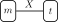
The resulting scalar is computed by summing over all \(x \in X\): \[ (m \then t)(\bullet \mid \bullet) = \sum_{x \in X} t(\bullet \mid x) \, m(x \mid \bullet). \]
When \(m\) is a probability measure and \(t\) assigns real-valued weights, this is the usual expectation \(\mathbb{E}_{m(x)}[t(x)] := \sum_{x \in X} t(x) \, m(x)\). We will use this notation freely from now on.
2.1.4 Crossing wires
Next, we define a kernel that swaps wires.
Definition 2.6 For each pair of finite sets \(X\) and \(Y\), we define the swap kernel \(\swap_{X,Y} : X \otimes Y \kernel Y \otimes X\) by \[ \swap_{X,Y}(y', x' \mid x, y) := \ivmark{(x', y') = (x, y)}. \]
In other words, \(\swap_{X,Y}\) is a deterministic kernel that takes a pair \((x, y)\) and returns the swapped pair \((y, x)\) with probability 1.
In string diagrams, we represent \(\swap_{X,Y}\) as crossing wires:
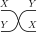
The swap kernel satisfies two important laws.
Swapping twice is the identity. If we swap the wires and swap them back, we get the original ordering:
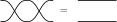
This is immediate: swapping a tuple twice returns the original, \((x,y) \mapsto (y,x) \mapsto (x,y)\). The takeaway is that the only thing that matters about wires is what they connect, not how they are routed in the picture. Any tangled arrangement of crossings that connects the same endpoints can be simplified.
Boxes can be moved through swaps. If we place two independent kernels \(f : X_1 \kernel Y_1\) and \(g : X_2 \kernel Y_2\) in parallel and then swap the outputs, we get the same result as first swapping the inputs and then applying the kernels in the opposite order (verify this by direct calculation).
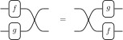
2.1.5 Copying and deleting
We now introduce kernels that allow us to split and terminate wires. This is crucial for managing the information flow in our models.
Definition 2.7 For each set \(X\), the copy kernel \(\cp_X : X \kernel X \otimes X\) and delete kernel \(\del_X : X \kernel I\) are defined by \[ \cp_X(x', x'' \mid x) := \ivmark{x' = x'' = x}, \qquad \del_X(\bullet \mid x) := 1. \]
The copy kernel duplicates its input: given \(x\), it outputs the pair \((x, x)\) with probability 1. The delete kernel discards its input: it sends every \(x\) to the dummy output \(\bullet\) with probability 1. In string diagrams, we draw copy as a splitting node and delete as a terminating node:
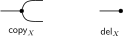
Copy and delete satisfy several natural laws. All of them can be verified by direct calculation.
Copy then delete is the identity. If we copy a wire and immediately delete one of the copies, we recover the original wire:
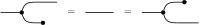
Copy is associative. Copying a wire and then copying one of the resulting wires gives the same result regardless of which copy we split further:
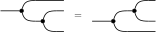
Since copying is associative, there is a unique way to produce \(n\) copies of a wire, no matter how the binary splittings are arranged. We can therefore draw an \(n\)-fold copy as a single node with \(n\) outgoing wires:
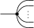
Copy is commutative. Copying and then swapping the two outputs is the same as just copying. This reflects the fact that the two copies are identical — there is no distinction between the “first” and “second” copy.
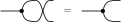
Compatibility with bundling. Copying and deleting on a product \(X_1 \otimes X_2\) can be done wire by wire. Deleting a pair amounts to deleting each component. Copying a pair amounts to copying each component and rearranging the wires so that the two copies of \(X_1\) are adjacent and the two copies of \(X_2\) are adjacent:
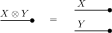
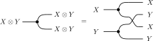
2.1.5.1 Copy enforces equality
The copy kernel plays a central role in building models because it enables variable sharing. Whenever two boxes need the same input, we route the wire through a copy node.
Consider two kernels \(f : X \kernel Y\) and \(g : X \kernel Z\) that both depend on \(X\). To feed the same \(x\) to both \(f\) and \(g\), we first copy the input wire and then apply \(f\) and \(g\) in parallel:
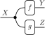
Evaluating this composite gives: \[ (\cp_X \then (f \otimes g))(y, z \mid x) = \sum_{x', x''} f(y \mid x') \, g(z \mid x'') \, \ivmark{x' = x'' = x} = f(y \mid x) \, g(z \mid x). \]
Notice how the Iverson bracket in the copy kernel enforces equality \(x' = x'' = x\), collapsing the sum. The result is the product \(f(y \mid x) \, g(z \mid x)\) — meaning \(Y\) and \(Z\) are conditionally independent given \(X\). This pattern is the graphical definition of conditional independence. We will return to this point later.
Another common pattern is composing two kernels while retaining the intermediate output via copying. We call this copy composition:
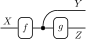
Evaluating this composite shows that copy composition acts like the chain rule for conditional probabilities: \[ (f \then \cp_Y \then (\id_Y \otimes g))(y,z \mid x) = \sum_{y', y''} \, \ivmark{y' = y'' = y} \, f(y' \mid x) \, g(z \mid y'') = f(y \mid x) \, g(z \mid y). \]
2.1.5.2 Delete marginalizes
The delete kernel gives us a way to marginalize out a variable. Composing a kernel \(f : X \kernel Y\) with \(\del_Y\) sums over all possible output values: \[ (f \then \del_Y)(\bullet \mid x) = \sum_{y \in Y} \del_Y(\bullet \mid y) \, f(y \mid x) = \sum_{y \in Y} f(y \mid x). \]
If \(f\) is a probability kernel, this sum equals 1, so deleting the output is the same as deleting the input. This is precisely the normalization condition from Definition 2.1.
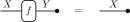
More generally, if \(f : X \kernel Y \otimes Z\) is a kernel with two outputs, then deleting \(Y\) gives the marginal on \(Z\):
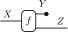
The resulting kernel sums over all possible values of \(y\): \[ (f \then (\del_Y \otimes \id_Z))(z \mid x) = \sum_{y \in Y} f(y, z \mid x). \]
2.1.6 Deterministic kernels
Any function \(f : X \to Y\) between finite sets can be viewed as a kernel. The idea is that a deterministic function is a special case of a random function — one that always produces the same output.
Definition 2.9 Given a function \(f : X \to Y\), the corresponding deterministic kernel \(\bar{f} : X \kernel Y\) is defined by \[ \bar{f}(y \mid x) := \ivmark{y = f(x)}. \]
In other words, \(\bar{f}\) maps \(x\) to \(f(x)\) with probability 1.
The identity, swap, copy, and delete kernels all arise from deterministic functions in this way. This construction is also compatible with composition: given functions \(f : X \to Y\) and \(g : Y \to Z\), the composite deterministic kernel \((\bar{f} \then \bar{g})\) equals the deterministic kernel of the composite function \(\overline{f \then g}\): \[ (\bar{f} \then \bar{g})(z \mid x) = \sum_{y \in Y} \ivmark{z = g(y)} \, \ivmark{y = f(x)} = \ivmark{z = g(f(x))} = \overline{(f \then g)}(z \mid x). \]
Deterministic kernels are characterized by two properties: they can be copied and they are normalized.
Definition 2.10 We say that a kernel \(f : X \kernel Y\) is copyable if applying \(f\) and then copying the output is the same as first copying the input and then applying \(f\) to each copy independently:
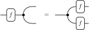
In symbols, \(f\) is copyable when \(f \then \cp_Y = \cp_X \then (f \otimes f)\).
A kernel is copyable precisely when it always produces the same output for a given input. In that case, copying the output is the same as running the process twice on the same input. This fails for genuinely random kernels: running a random process twice may produce different outputs, so copying after the fact is not the same as running two independent copies.
The following proposition makes this precise.
Proposition 2.11 A discrete kernel is copyable if and only if it arises from a deterministic function. In other words, \(f : X \kernel Y\) is copyable if and only if there exists a function \(g : X \to Y\) such that \(f = \bar{g}\).
Proof. We expand both sides and set them equal. The left-hand side gives: \[ (f \then \cp_Y)(y', y'' \mid x) = \sum_{y} f(y \mid x) \, \ivmark{y' = y'' = y} = f(y' \mid x) \, \ivmark{y' = y''}. \]
The right-hand side gives: \[ (\cp_X \then (f \otimes f))(y', y'' \mid x) = \sum_{x', x''} f(y' \mid x') \, f(y'' \mid x'') \, \ivmark{x' = x'' = x} = f(y' \mid x) \, f(y'' \mid x). \]
First, suppose \(f\) arises from a function. Then \(f(y' \mid x) = \ivmark{y' = f(x)}\), so the left-hand side becomes \(\ivmark{y' = y'' = f(x)}\) and the right-hand side becomes \(\ivmark{y' = f(x)} \, \ivmark{y'' = f(x)}\), which are equal.
Conversely, suppose \(f\) is copyable, so that \(f(y' \mid x) \, \ivmark{y' = y''} = f(y' \mid x) \, f(y'' \mid x)\) for all \(x, y', y''\). Setting \(y' = y''\) gives \(f(y' \mid x) = f(y' \mid x)^2\), so \(f(y' \mid x) \in \{0, 1\}\) for every \(x\) and \(y'\). Next, suppose for contradiction that there exist two distinct values \(y' \neq y''\) with \(f(y' \mid x) = f(y'' \mid x) = 1\) for some \(x\). Then the left-hand side equals \(1 \cdot \ivmark{y' = y''} = 0\), while the right-hand side equals \(1 \cdot 1 = 1\), a contradiction. Hence for each \(x\), there is at most one value \(y\) with \(f(y \mid x) = 1\). For each such \(x\), we can define a function \(g : X \to Y\) by setting \(g(x)\) to be this unique \(y\), giving \(f(y \mid x) = \ivmark{y = g(x)} = \bar{g}(y \mid x)\).
2.2 Exact evaluation of models
We now have all the ingredients to interpret a string diagram as a probability distribution. A string diagram describes a composition of kernels, so once we specify each box, we can compute the resulting kernel by applying the composition rules. Let us illustrate this with the fire alarm model:
This diagram tells a story. A fire (\(F\)) may start (\(f\)). If it does, it can produce smoke (\(S\)) via the smoke mechanism (\(s\)) and cause someone to pull the alarm lever (\(L\)) via the lever mechanism (\(p\)). Both smoke and the lever feed into the alarm trigger (\(t\)), which determines whether the alarm (\(A\)) goes off. The outputs of the model are \(S\) and \(A\) — these are the variables we can observe. To evaluate this model, we need to parse the diagram as a composition of kernels and compute the result.
2.2.1 Parsing rules
A string diagram can be parsed as a composition of kernels in many different ways. For example, consider a chain of three kernels.
Because we don’t have parentheses, we can parse this diagram in two ways: either as \((f \then g) \then h\) or as \(f \then (g \then h)\). Both parsings give the same result because sequential composition is associative. This is straightforward to verify from the definition.
A second ambiguity arises when we have both sequential and parallel composition.
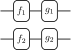
Should we first compose in sequence and then in parallel, or the other way around? Either order gives the same result. This is the interchange law: \[ (f_1 \then g_1) \otimes (f_2 \then g_2) = (f_1 \otimes f_2) \then (g_1 \otimes g_2). \]
Together with the properties of swap, copy, and delete established in the previous section, associativity and interchange ensure that all parsings of a string diagram yield the same kernel.
Remark 2.1. Technically, discrete kernels form a symmetric monoidal category with a copy-delete structure. A theorem from category theory guarantees that string diagrams provide a faithful syntax for reasoning about composites in such categories — meaning two diagrams represent the same kernel if and only if one can be deformed into the other.
2.2.2 Sum-product form
A useful standard form is obtained by performing all marginalization at the end. We can achieve this by replacing every sequential composition with a copy composition followed by a delete, and then moving all the deletes to the end of the diagram. For the fire alarm model, this gives:
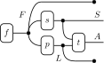
To evaluate this diagram, recall that copy composition produces a product of kernels with shared variables (the copy nodes enforce equality via Iverson brackets), and that delete sums out a variable. Combining these, we get the sum-product form: \[ p(x_s, x_a) = \sum_{x_f, x_l} f(x_f \mid \bullet) \, s(x_s \mid x_f) \, p(x_l \mid x_f) \, t(x_a \mid x_s, x_l), \] where the subscripts denote which wire the variable corresponds to. In general, any string diagram of probability kernels evaluates to an expression of this form: \[ \sum_{\text{internal}} \prod_{i} f_i(\text{outputs}_i \mid \text{inputs}_i), \] where the sum ranges over all internal variables (wires that do not exit the diagram) and the product ranges over all boxes.
2.2.3 Computation by tensor operations
Each composition rule translates directly into a tensor operation. If we represent a kernel \(f : X \kernel Y\) as a matrix whose \((x, y)\)-entry is \(f(y \mid x)\), then:
- Sequential composition is matrix multiplication.
- Parallel composition is the tensor (Kronecker) product.
- Copy composition is an element-wise product with shared indices.
- Delete sums out an index.
We can therefore evaluate any string diagram by performing a sequence of such operations. The order in which we perform these operations does not affect the final result, but it can dramatically affect the computational cost.
Consider the fire alarm model with binary variables (\(|F| = |S| = |L| = |A| = 2\)). For each output pair \((x_s, x_a)\), the naive sum-product form \[ \sum_{x_f, x_l} f(x_f \mid \bullet) \, s(x_s \mid x_f) \, p(x_l \mid x_f) \, t(x_a \mid x_s, x_l) \] requires evaluating the product for all \(2 \times 2 = 4\) combinations of \(x_f\) and \(x_l\) and summing the results — a total of \(15\) arithmetic operations.1 We can reduce the work by pushing sums inward. Summing over \(x_l\) first gives: \[ \sum_{x_f} f(x_f \mid \bullet) \, s(x_s \mid x_f) \, \left( \sum_{x_l} p(x_l \mid x_f) \, t(x_a \mid x_s, x_l) \right). \]
For each value of \(x_f\), the inner sum over \(x_l\) requires \(3\) operations (\(2\) multiplications and \(1\) addition). Doing this for both values of \(x_f\) and then evaluating the outer sum brings the total to \(11\) operations. Another possible arrangement is to sum over \(x_f\) first: \[ \sum_{x_l} t(x_a \mid x_s, x_l) \, \sum_{x_f} f(x_f \mid \bullet) \, s(x_s \mid x_f) \, p(x_l \mid x_f). \]
This requires \(13\) operations.
In this small, densely connected example, the savings are modest, but they can scale exponentially with the size of the model. (Consider a chain of \(n\) binary kernels: the sum-product form sums over \(2^n\) configurations, while contracting from left to right takes only \(O(n)\) matrix multiplications.) Finding the optimal contraction order is NP-hard in general, but good heuristics exist. This is the basis for exact inference algorithms like variable elimination. (See Darwiche (2009) for an introduction to these algorithms.)
2.3 Sampling from models
An exact evaluation of even a modest-sized model can be expensive: the sum-product form requires summing over all configurations of the internal variables. Sampling gives us a way to approximate the answer instead. In the Introduction, we saw how to sample from a generative model by implementing each box in the string diagram as a random function. But why does this work? In this section, we describe the general procedure and explain why it is sound.
2.3.1 From diagrams to programs
The recipe is simple. Suppose you are given a string diagram of probability kernels. For each box \(f : X \kernel Y\) in our diagram, we write a function f(x) that takes an input \(x\) and returns a random output \(y\) drawn according to \(f(y \mid x)\). We then compose these functions following the structure of the diagram:
- Sequential composition \((f \then g)\): call
f, then pass its output tog. - Parallel composition \((f \otimes g)\): call
fandgindependently and return both outputs. - Copy: reuse a variable by passing it to multiple functions.
- Delete: simply ignore the variable (don’t use it downstream).
The identity and swap kernels are trivial — they just pass values through or reorder them.
2.3.2 Why this is sound
We want to show that the program we get by composing samplers this way actually draws samples from the composite kernel specified by the diagram. This relies on the following assumption about our samplers:
Faithful sampling. Each call to
f(x)independently returns \(y\) with probability \(f(y \mid x)\), using its own source of randomness that does not depend on — or influence — any other part of the program.
This captures three ideas. First, each sampler draws from the correct distribution. Second, different calls use independent randomness. Third, the output depends only on the explicit input \(x\) — not on any hidden external state. The last point is the programmatic version of the defining property of a kernel: once we know \(x\), no additional information changes the output distribution.
Any reasonable programming language satisfies this assumption automatically, as long as each sampler is a pure function that draws from an independent random number generator.
Given faithful sampling, we can check that each composition rule is correctly implemented.
Sequential composition. Consider kernels \(f : X \kernel Y\) and \(g : Y \kernel Z\), implemented as the program:
y = f(x)
z = g(y)
return zThe call f(x) produces \(y\) with probability \(f(y \mid x)\). Since g(y) depends only on \(y\), it produces \(z\) with probability \(g(z \mid y)\). The probability of the full trace \((y, z)\) is therefore \(f(y \mid x) \, g(z \mid y)\). Since the program only returns \(z\), summing over the intermediate \(y\) gives \[
p(z \mid x) = \sum_{y \in Y} g(z \mid y) \, f(y \mid x) = (f \then g)(z \mid x).
\]
Parallel composition. Consider the program:
y1 = f1(x1)
y2 = f2(x2)
return (y1, y2)The two calls use independent randomness, and each output depends only on its own input. So the joint probability factors: \[ p(y_1, y_2 \mid x_1, x_2) = f_1(y_1 \mid x_1) \, f_2(y_2 \mid x_2) = (f_1 \otimes f_2)(y_1, y_2 \mid x_1, x_2). \]
Copy and delete. Copying a variable is deterministic — we just pass the same value to two places. This corresponds to the copy kernel, which outputs \((x, x)\) with probability 1. Deleting a variable means not using it. In probabilistic terms, if a variable does not appear in the output, its value is summed over — this is marginalization. We already used this reasoning in the sequential composition argument above: the intermediate variable \(y\) is not returned, so we sum over it to get the marginal distribution on \(z\). Since our kernels are normalized, marginalizing out a variable has no effect on the remaining variables.
Since every string diagram is built from these operations, any program that faithfully follows the wiring of the diagram will draw samples from the kernel specified by the diagram.
Note that this argument relies on every box being a probability kernel. Sampling is inherently self-normalizing: drawing a random output always produces a probability distribution, so there is no way to directly sample from an unnormalized kernel. Normalization also ensures that ignoring a variable (deletion) is harmless. In the next chapter, we will see how to handle unnormalized kernels using weighted samples.
2.3.3 Estimating expectations from samples
The theoretical foundation for estimating quantities from finite samples is the Law of Large Numbers.
Law of Large Numbers. If \(x_1, x_2, \ldots\) are independent draws from a probability measure \(m\) on a finite set \(X\), then for any test function \(t \colon X \to \mathbb{R}\): \[ \frac{1}{N}\sum_{i=1}^N t(x_i) \;\longrightarrow\; \mathbb{E}_{m(x)}[t(x)] \quad \text{as } N \to \infty. \]
In other words, we can estimate any expectation by sampling: draw \(N\) samples from \(m\), apply \(t\) to each, and average. For large enough \(N\), the sample average will be close to the true expectation. This is the core idea behind Monte Carlo estimation.
Estimating probabilities. Probabilities are a special case of expectations. For any event \(E \subseteq X\), define the indicator function \(\mathbf{1}_E \colon X \to \mathbb{R}\) by \[ \mathbf{1}_E(x) := \begin{cases} 1 & \text{if } x \in E, \\ 0 & \text{otherwise.} \end{cases} \]
Then \(\mathbb{E}_{m(x)}[\mathbf{1}_E(x)] = \sum_{x \in X} \mathbf{1}_E(x) \, m(x) = \sum_{x \in E} m(x) = P(E)\). By the Law of Large Numbers, we can therefore estimate any probability by counting the fraction of samples that fall in \(E\): \[ P(E) \approx \frac{1}{N} \sum_{i=1}^N \mathbf{1}_E(x_i). \]
This is precisely what we do when we sample from a string diagram and count how often a particular outcome occurs.
2.4 Comparison to other approaches
There are several well-known frameworks for representing probabilistic models, each with its own strengths. Here we compare string diagrams to three common alternatives.
2.4.1 Bayesian networks
A Bayesian network represents a joint distribution over a set of random variables using a directed acyclic graph (DAG). Each node corresponds to a variable and is equipped with a conditional probability distribution (CPD) that specifies the distribution of that variable given its parents. The joint distribution factors as a product of these CPDs: \[ p(x_1, \ldots, x_n) = \prod_{i=1}^{n} p(x_i \mid \text{parents}(x_i)). \]
Bayesian networks have one clear practical advantage: they are easier to draw. Each node is simply a variable, and each arrow represents a direct dependence. There is no need to name the mechanisms, draw copy or delete nodes, or route wires. This simplicity reflects the fact that DAGs carry less information — they record which variables depend on which, but not how the dependencies are implemented. For quick sketches and high-level model specification, this is often all that is needed.
Our string diagrams encompass Bayesian networks as a special case. A Bayesian network corresponds to a string diagram with no global input, where each box has exactly one output wire that is either fed into downstream boxes or sent to the global output. Comparing the product above to the sum-product form from the previous section confirms this: in a Bayesian network, every variable appears as an output wire of some box, and the internal variables are those that are not observed.
However, string diagrams are strictly more expressive than standard Bayesian networks:
| Aspect | String diagrams | Bayesian networks |
|---|---|---|
| Global inputs | Yes | No |
| Multiple outputs per box | Yes | No |
| Partial observation (some outputs deleted) | Yes | No |
Bayesian networks can be extended to support some of these features — for instance, by adding context variables or hidden nodes — but these extensions go beyond the standard definition.
The extra expressiveness of string diagrams comes with deeper structural advantages.
First, DAGs are not compositional. You cannot take a subgraph and treat it as a single node in a larger network. In string diagrams, any sub-diagram can be wrapped into a box, producing a new kernel that can be plugged into other diagrams. This compositional structure makes it easy to build complex models from reusable components. String diagrams also enforce typing of variables and capture patterns of reuse — for instance, the same kernel \(f\) can appear in several places in a diagram, making it clear that the same mechanism is applied repeatedly.
Second, DAGs cannot distinguish between certain factorizations. Two different causal mechanisms can lead to the same DAG structure. String diagrams, by contrast, record the full compositional structure — including which variables are shared and how — so distinct factorizations produce visibly different diagrams.
2.4.2 Factor graphs
Factor graphs address some of the limitations of Bayesian networks. A factor graph is a bipartite graph with two kinds of nodes: variable nodes (one per random variable) and factor nodes (one per function in the factorization). An edge connects a variable node to a factor node whenever that variable appears as an argument of the factor. The joint distribution is a product of all the factors: \[ p(x_1, \ldots, x_n) = \frac{1}{Z} \prod_{j} f_j(\text{neighbors}(j)), \] where \(Z\) is a normalizing constant.
Many variants of factor graphs exist, mostly originating from the engineering and signal processing communities. A particularly good version is the Forney-style factor graph (FFG) (see Loeliger (2004)). Like string diagrams, FFGs place variables on edges rather than nodes, allow half-edges (which act like global inputs and outputs), and use explicit equality nodes (analogous to our copy kernels). Directed variants can be obtained by adding arrows to the edges. The structure is quite similar to string diagrams, and FFGs support compositionality — a sub-graph can be wrapped into a single factor node.
The main advantage of string diagrams over factor graphs is their role as a visual proof system. The coherence theorem (see Remark 2.1) guarantees that string diagrams provide a faithful syntax for reasoning about kernels — any equation that can be derived by deforming diagrams is valid, and conversely. This goes beyond the discrete setting: string diagrams apply to general measure-theoretic kernels and many other mathematical structures (any symmetric monoidal category with the appropriate structure). Results proved diagrammatically transfer automatically to all these settings.
2.4.3 Undirected graphical models
An undirected graphical model (or Markov random field) represents a distribution using an undirected graph. Each node is a random variable, and the joint distribution factors over the cliques of the graph: \[ p(x_1, \ldots, x_n) = \frac{1}{Z} \prod_{c \in \text{cliques}} \phi_c(x_c), \] where each \(\phi_c\) is a non-negative potential function and \(Z = \sum_{x_1, \ldots, x_n} \prod_c \phi_c(x_c)\) is the normalizing constant.
Unlike Bayesian networks, undirected models do not impose acyclicity, which makes them natural for modeling symmetric interactions (e.g., in image processing or physics). However, the potential functions are typically unnormalized — the normalizing constant \(Z\) must be computed separately, and this computation is often intractable. By contrast, our string diagrams of probability kernels are normalized by construction, so the sum-product form directly gives a probability distribution without any additional normalization step.
Bibliographic notes
Each of the \(4\) terms involves \(3\) multiplications, and summing \(4\) terms takes \(3\) additions, giving \(4 \times 3 + 3 = 15\).↩︎